Clips¶
Contents
See also Clip Menu.
Clips (Video, Audio and Images)¶
The

button (Add Clip) brings up the Add Clip Dialog where you can choose video, audio or still image clips to add to the The Project Bin.
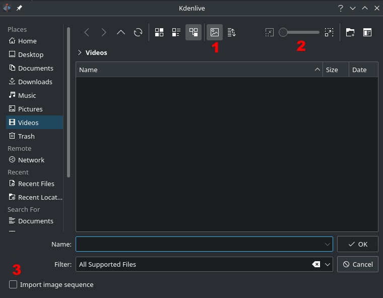{kind=link}
The button
labeled 1 toggles File Preview on and off (applies to image files only). The slider labeled 2 adjusts the size of the preview icons. The checkbox labeled 3 enables the import of a series of images that can be used to make a stop motion animation.
You can add other types of clips by choosing a clip type from the menu brought up from the drop down button next to the
button.

Color clips¶
Color clips are images composed of a single color that can be added to the Project Tree. They can be useful to provide a background on which to place titles.
Add color clips by choosing from the drop down button next to the
button.
This brings up the Color Clip dialog from which you can choose a color and a duration.
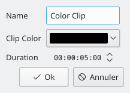{kind=link}
Clicking adds the clip to the project tree. The clip can then be dragged to the timeline. The duration of the color clip can be adjusted on the timeline.
Title clips¶
See Titles
Image Sequence clips¶
Image Sequence clips are clips created from a series of still images. The feature can be used to make an animation from a collection of still images or to create a slideshow of still images. To create the former, use a short frame duration; to create the latter, use a long frame duration.
To create an image sequence clip, choose from the drop down list.
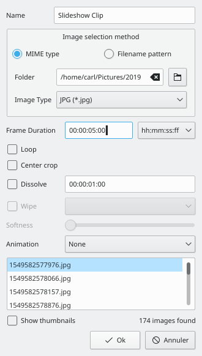{kind=link}
From the Image Sequence dialog choose as Image selection method.
Browse to the location of the images which will make up your image sequence and select the first image. The subsequent images that are to be used in the slide show will be selected based on some sort of filename algorithm that predicts what the next image file name should be.
For example, if the first image is 100_1697.jpg then the next will be 100_1698.jpg, etc.
Select an appropriate frame duration – this defines how long each image be displayed.
Then hit . A video file made up of all the images in the folder from which you selected the first frame file from will be added to the Project Tree.
You can then drag this video to the timeline.
Center crop: automatically fills the output video frame with the images while maintaining their aspect ratio by zooming the image and cropping equal amounts from each edge until can fill the full frame. Without this option, the image will not be zoomed, but black bars will appear when the photo orientation or aspect does not match the video’s.
Animation: adds preset slow smooth pan and zoom effects also known as the Ken Burns Effect. You can choose no animation, pans only, zooms only, or a combination of pans and zooms. Each option also has a low pass filter to reduce the noise in the images that may occur during this operation. Low pass filtering is much slower, so you should preview without it, and then enable it to render.
Create Folder¶
See Create Folder
Online Resources¶
See Online Resources
Stop Motion¶
Proxy clips¶
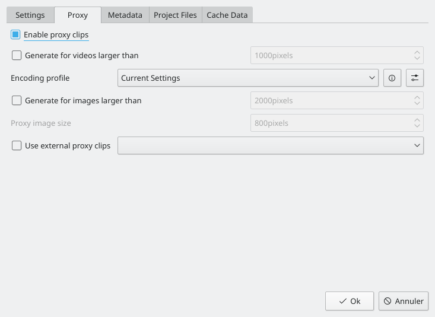{kind=link}
Proxy clips* create a lower-quality transcode of the original footage for use in real-time rendering in the project monitor. This allows for a smoother editing experience even on slower computers with High Definition footage. When rendering, by default, the original quality footage is used and not the proxy footage. For example, Video decoding of H.264 or H.265 clips, requires a lot of computing power to decode and could cause playback stutter when rendering effects in real time.
Proxy clips can be enabled/disabled for the current project in the Project Settings ( > > > ).
To enable proxy clips by default for new projects, go to > > > . See also the Project Settings Dialog page

As soon as proxy clips are enabled, they can be generated for specific project clips in the Project Tree widget via the context menu . After you select for a clip, a job will start to create the clip. You can view the progress of this job by looking at the little gray progress bar that appears at the bottom of the clip in the Project Tree – see picture. Clicking again disables the proxy for this clip.
You can multi-select clips in the Project Tree and select to start a batch proxy clip generation job which will queue up multiple proxy clip generation jobs.
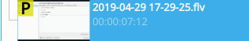{kind=link}
Once the proxy clip creation has completed, the proxy clip will appear with a P icon in the Project Tree.
When rendering to the final output file, you can choose whether to use the proxy clips as well. It is disabled by default , but for a quick rendering preview it is useful.
Clip Properties¶
You can display and edit clip properties by selecting a clip in the The Project Bin and choosing from the menu or from the right-click menu. Or by turning on the display of clip properties the > check box.
File Info¶
The tab displays information about the file.
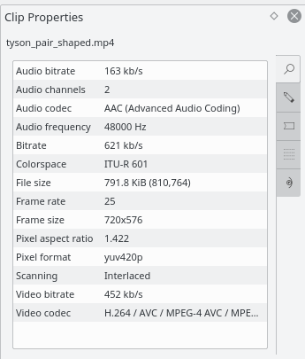Properties¶
The tab displays advanced properties of the clip where you can select a check box and then force the clip to take the property you specify. For example, you can use to tell a clip that seems to have forgotten it was 16:9 ratio that it really is 16:9 ratio.
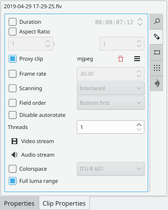{kind=link}
Advanced Clip property options are:
Duration: Change the clip duration. If the duration is shorter than the clip duration, then the clip is cropped. If the duration is bigger than the clip duration, then the last image is repeated until the new duration is over.
Aspect ratio: Change the clip aspect.
Proxy clips: Enable a proxy clip for this clip. See Clips.
Frame rate: Change the clip frame rate. See Wikipedia Frame rate.
Scanning
Field order
Disable autorotate
Threads
Video stream
Audio stream
Colorspace
Markers¶
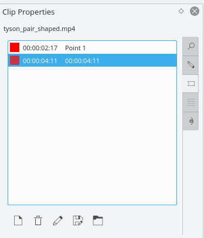{kind=link}
You can use the tab to add markers for certain points in the source file that are important. However, it is probably easier to add markers to your clips via the Monitors because that allows you to preview the file at the location where you are adding the marker.
Once markers are put in your clip, you can access them in the Monitors by right-clicking and selecting (see picture.) Also note how the markers appear as red vertical lines in the Clip Monitor (see yellow highlighted regions in the picture.) You can turn on the display of the marker comments in the timeline too (see editing).
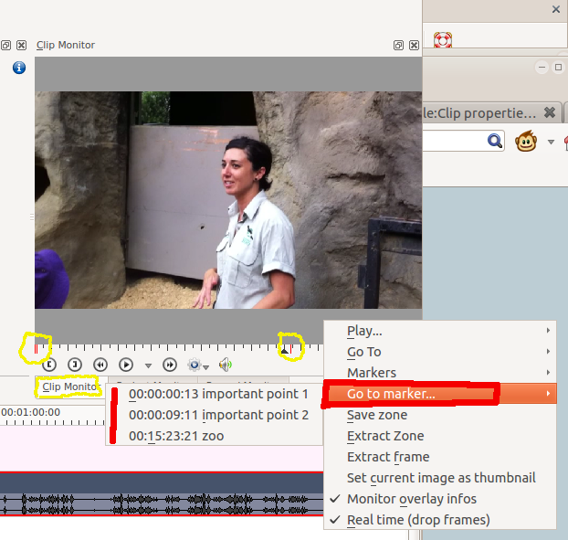{kind=link}
Markers can also be added to clips on the timeline. Clip in Timeline - Right-Click Menu the clip and choose . Markers added this way also appear in the clip in the Project Bin.
Metadata¶
You expect this to show any meta data that is contained in the clip. Does not appear to work.
Analysis¶
You can view and delete motion vector data that is associated with the clip from here. This is data created by auto_mask

Button 1 Will delete the selected analysis data, Button 2 will allow you to export the data (semi colon delimited text file), Button 3 will allow you to import analysis data.
Generators¶
Counter¶
This generates a counter timer clip in various formats which you can put onto the timeline.
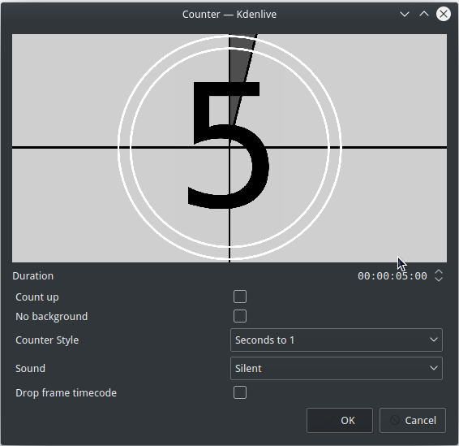You can choose to have the clip count up by checking that option, otherwise it will count down by default. The No Background option will remove the background from the counter leaving only the grey background without the lines.
To change the size and position of the clip, you can add an effect to the clip on the timeline such as the Position and Zoom or the transform.
White Noise¶
This generates a video noise clip – like the “snow” on an out-of-tune analogue TV. In ver 17.04 it generates audio white noise as well as video snow.
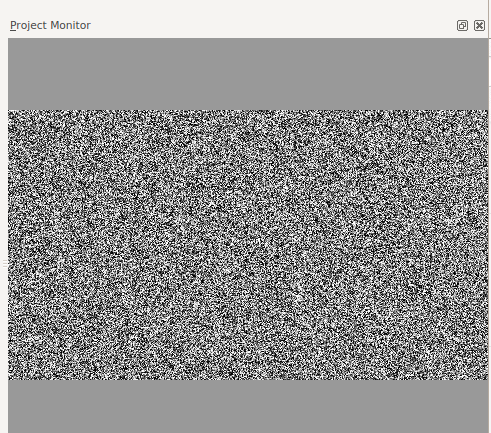Color Bars¶
This generator came in to Kdenlive around ver 17.04. Generates a color test pattern of various types. Including PAL color bars, BBC color bars, EBU color bars, SMPTE color bars, Philips PM5544, FuBK
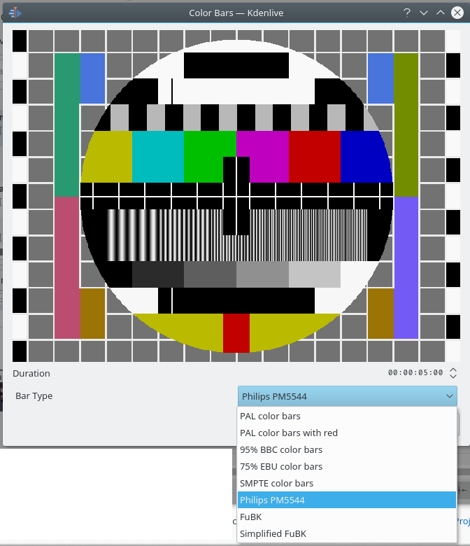